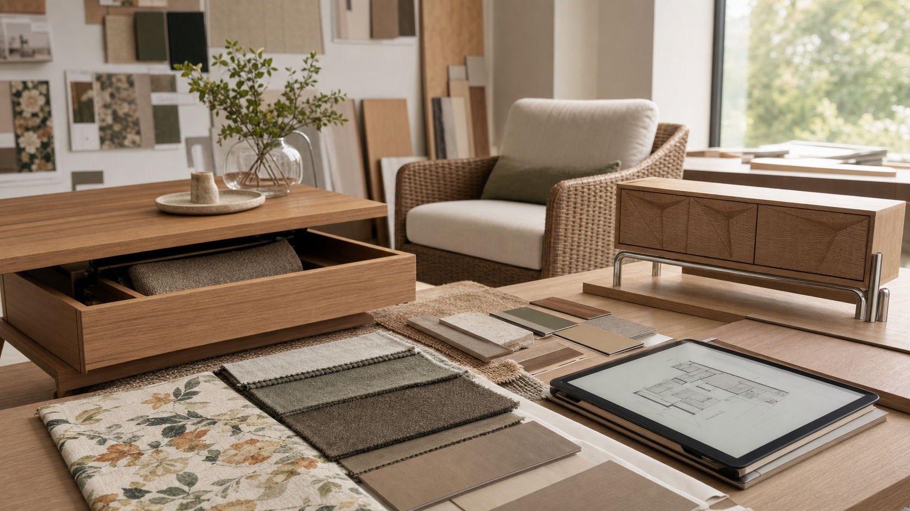

2026.07.14 가구·인테리어·목공 일일 트렌드

오늘의 흐름은 "잘 만든 물건을 더 설득력 있게 고르는 방식"입니다. 소비자는 세일과 오픈박스까지 적극적으로 비교하고, 색상은 베이지보다 깊은 타우프로 이동하며, 브랜드 협업은 단순 패턴보다 지역성과 이야기를 요구합니다. 동시에 AI 배치 연구와 목재 출처 담론은 공방이 견적, 제안서, 소재 설명을 더 구조화해야 한다는 신호를 줍니다.
1. 프리미엄 가구도 오픈박스와 아울렛 가격이 구매 판단을 흔든다
Food & Wine은 Pottery Barn의 오픈박스 아울렛에서 야외 섹셔널, 수납형 유칼립투스 커피테이블, 가죽 스툴, 목재 다이닝 체어, 러그와 테이블웨어까지 큰 폭의 할인 품목이 보인다고 정리했습니다. 특히 야외 가구와 주방·다이닝 가구가 함께 묶인 점은 소비자가 "한 공간 전체를 새로 꾸미는 비용"을 계속 비교한다는 신호입니다.
왜 중요할까. 맞춤 원목가구 공방은 할인 경쟁을 그대로 따라가기 어렵습니다. 대신 견적서에 기본형, 수납 강화형, 고급 마감형처럼 선택지를 분리하고, 오픈박스보다 오래 쓰는 근거를 구조, 수리 가능성, 소재 이력, 사후 관리로 보여줘야 합니다.
- Food & Wine, Pottery Barn 아울렛 세일 정리 · 2026.07.13
- Pottery Barn Open Box Outlet 공식 페이지 · 2026.07.14 확인
2. 베이지 대신 따뜻한 타우프가 원목과 어울리는 새 뉴트럴로 부상한다
Livingetc는 2026년 뉴트럴 팔레트가 평평한 베이지보다 밀크초콜릿, 몰 브라운, 회갈색이 섞인 따뜻한 타우프로 이동한다고 봤습니다. 타우프는 벽과 천장, 몰딩을 비슷한 톤으로 묶는 톤 드렌칭에 잘 맞고, 목재, 리넨, 석고, 황동 같은 자연 소재와 함께 쓰기 쉽다는 점이 강조됐습니다.
왜 중요할까. 오크, 월넛, 애쉬 가구를 제안할 때 흰 벽 배경만 보여주면 실제 집에서의 온도감이 약해집니다. 목간은 샘플 촬영에 타우프, 올리브, 테라코타, 차콜을 함께 배치해 수종별 색 궁합을 보여주는 방식으로 상담 품질을 높일 수 있습니다.
- Livingetc, 타우프 컬러 트렌드 · 2026.07.13
3. 대중 협업 가구는 가격보다 "지역성과 이야기"를 전면에 세운다
Ideal Home은 Dunelm과 Yinka Ilori의 협업 컬렉션을 현장 프리뷰로 소개하며, 40피스 규모의 가구·홈웨어가 강한 색과 패턴뿐 아니라 레스터의 섬유 역사, 다문화 공동체, 시장 노점에서 출발한 브랜드 서사를 담고 있다고 설명했습니다. 파인 사이드테이블, 스위블 다이닝 체어, 크롬 디테일 사이드보드처럼 접근 가능한 가격대의 가구가 이야기와 함께 제시됩니다.
왜 중요할까. 공모전이나 신제품 기획에서 "예쁜 원목 가구"만으로는 약합니다. 지역 목재, 동네 생활 방식, 가족의 수납 습관, 공방의 제작 공정처럼 제품을 만든 이유를 함께 설계해야 사진, 설명문, 전시 부스가 하나의 메시지로 이어집니다.
- Ideal Home, Dunelm x Yinka Ilori 컬렉션 현장 리뷰 · 2026.07.08
4. AI 실내 배치 연구가 맞춤가구 제안서의 기준을 높인다
arXiv에 공개된 Architect-Ant 연구는 270개 건축 평면 데이터와 가구 배치 주석을 바탕으로, 방의 용도와 벽·문·창·동선 제약을 고려해 편집 가능한 가구 배치 DSL을 생성하는 방식을 제안합니다. 결과 이미지를 만드는 것보다 중요한 점은 배치 논리를 좌표와 규칙으로 남겨 다시 편집할 수 있게 했다는 점입니다.
왜 중요할까. 목간의 맞춤 견적도 "예상 배치 이미지"에 그치면 설득력이 약합니다. 문 열림, 의자 후퇴 공간, 서랍 개폐 여유, 콘센트 위치, 청소 동선을 도면 체크리스트로 남기면 AI 도구를 쓰지 않더라도 제안서의 전문성이 높아집니다.
- arXiv, Architect-Ant 논문 페이지 · 2026.06.09 제출
5. 목재 전시는 "나무를 어디서 어떻게 썼는가"까지 묻는다
Wallpaper*는 3 Days of Design 2026의 Material Matters 전시에 설치된 AHEC, Mitre & Mondays, Benchmark의 "Wood for the Trees"를 소개했습니다. 이 작업은 미국산 활엽수를 숲처럼 배치하고, 원목 판재를 미래 프로젝트에 다시 쓸 수 있도록 과도하게 가공하지 않았다는 점을 강조합니다.
왜 중요할까. 원목가구의 소재 설명은 수종명과 가격에서 끝나면 부족합니다. 목재 출처, 건조 방식, 가공 최소화, 남은 판재의 재사용 계획, 오일 마감의 수선 가능성을 함께 설명하면 공방의 지속가능성이 추상 구호가 아니라 제작 기준으로 보입니다.
- Wallpaper*, AHEC Wood for the Trees 보도 · 2026.06.11
- American Hardwood Export Council 공식 사이트 · 2026.07.14 확인
오늘의 실무 인사이트
- 견적서를 가격표가 아니라 선택 구조로 만든다. 기본형, 수납형, 야외 대응형, 프리미엄 마감형을 나누고 각 단계마다 소재, 하드웨어, 관리 범위가 어떻게 달라지는지 한 장으로 비교하면 할인 시장과 다른 설득력을 만들 수 있습니다.
- 제품 촬영에 색상칩과 수종 샘플을 함께 둔다. 타우프, 올리브, 플로럴 패브릭, 황동·크롬 포인트를 옆에 두고 촬영하면 고객이 원목가구를 자기 집 팔레트 안에서 상상하기 쉬워집니다.
- 맞춤가구 상담 체크리스트에 동선 항목을 추가한다. 문 열림, 의자 후퇴, 서랍 개폐, 로봇청소기 통과, 콘센트와 케이블 위치를 도면에 표시하면 AI 배치 도구가 강조하는 논리적 배치를 수작업 상담에도 적용할 수 있습니다.
- 공모전 작품 설명에는 소재의 다음 생애를 적는다. 남은 판재를 어디에 쓰는지, 분해·수리 가능한 구조인지, 오일 재마감이 가능한지까지 쓰면 원목가구의 지속가능성이 더 구체적으로 전달됩니다.